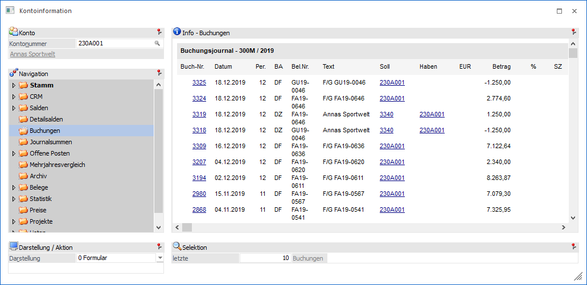
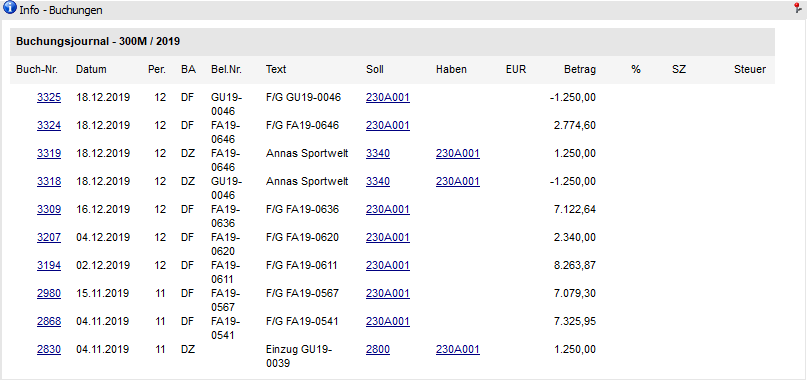
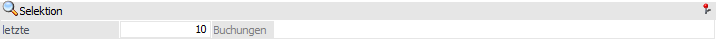

In dem Bereich "Buchungen" werden alle Buchungen, welche das Konto betreffen, angezeigt.

Der Bereich "Buchungen" besteht aus den folgenden Info-Elementen:
ü Info - Buchungen
ü Selektion
ü Darstellung / Aktion
Info - Buchungen

Hier werden die Buchungen angezeigt, welche für das Konto erfasst wurden. Nach Anklicken der Kontonummer wird das dazugehörige Kontoblatt des jeweiligen Kontos angezeigt.
Durch Anklicken der Buchungsnummer wird die entsprechende Buchungsinfo zur Buchung angezeigt.
Selektion

In diesem Bereich kann definiert werden viele Buchungen dargestellt werden sollen. Die gewählte Einstellung wird benutzerspezifisch gespeichert.
Ø letzte x Buchungen
An dieser Stelle kann definiert werden, wie viele Buchungen maximal angezeigt werden sollen.
Hinweis
Es werden für Hauptbuchkonten bei der Auswertung der letzten x Buchungen auch die Buchungen auf die zugeordneten Nebenbuchkonten berücksichtigt.
Darstellung / Aktion

Ø Darstellung
An dieser Stelle kann mit Hilfe einer Auswahlliste gewählt werden, ob die Darstellung der Buchungen in Form eines Formulars oder einer Tabelle erfolgen soll.